2.2.1 Prediction of the gas composition
2.2.2 Gasifier efficiency
The substance of a solid fuel is usually composed of the elements carbon, hydrogen and oxygen. In addition there may be nitrogen and sulphur, but since these are present only in small quantities they will be disregarded in the following discussion.
In the types of gasifiers considered here, the solid fuel is heated by combustion of a part of the fuel. The combustion gases are then reduced by being passed through a bed of fuel at high temperature.
In complete combustion, carbon dioxide is obtained from the carbon and water from the hydrogen. Oxygen from the fuel will of course be incorporated in the combustion products, thereby decreasing the amount of combustion air needed.
Oxidation, or combustion, is described by the following chemical reaction formulae:
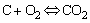 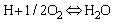
These formulae mean that burning 1 gram atom, i.e. 12.00 g of carbon, to dioxide, a heat quantity of 401.9 kJ is released, and that a heat quantity of 241.1 kJ results from the oxidation of 1 gram molecule, i.e. 2.016 g of hydrogen to water vapour.
In all types of gasifiers, the carbon dioxide (CO2) and water vapour (H2O) are converted (reduced) as much as possible to carbon monoxide, hydrogen and methane, which are the main combustible components of producer gas.
The most important reactions that take place in the reduction zone of a gasifier between the different gaseous and solid reactants are given below. A minus sign indicates that heat is generated in the reaction, a positive sign that the reaction requires heat.
|
a) |
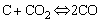 |
+ 164.9 kJ/kmol |
|
b) |
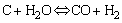 |
+ 122.6 kJ/kmol |
|
c) |
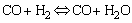 |
+ 42.3 kJ/kmol |
|
d) |
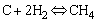 |
0 |
|
e) |
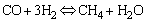 |
- 205.9 kJ/kmol |
Equations (a) and (b), which are the main reactions of reduction, show that reduction requires heat. Therefore the gas temperature will decrease during reduction.
Reaction (c) describes the so-called water-gas equilibrium. For each temperature, in theory, the ratio between the product of the concentration of carbon monoxide (CO) and water vapour (H2O) and the product of the concentrations of carbon dioxide (CO2) and hydrogen (H2) is fixed by the value of the water gas equilibrium constant (KWE). In practice, the equilibrium composition of the gas will only be reached in cases where the reaction rate and the time for reaction are sufficient.
The reaction rate decreases with falling temperature. In the case of the water-gas equilibrium, the reaction rate becomes so low below 700°C that the equilibrium is said to be "frozen". The gas composition then remains unchanged. Values of KWE for different temperatures are given in Table 2.2.
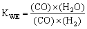
Table 2.2 Temperature dependence of the water-gas equilibrium constant.
|
Temperature (°C) |
we |
|
600 |
0.38 |
|
700 |
0.62 |
|
800 |
0.92 |
|
900 |
1.27 |
|
1000 |
1.60 |
Introduction of the water-gas equilibrium concept provides the opportunity to calculate the gas composition theoretically from a gasifier which has reached equilibrium at a given temperature, as was shown by Tobler and Schlaepfer (34).
The procedure is to derive from mass balances of the four main ingoing elements (carbon, hydrogen, oxygen and nitrogen), an energy balance over the system and the relation given by the water-gas equilibrium. By further assuming that the amounts of methane in the producer gas per kg of dry fuel are constant (as is more or less the case of gasifiers under normal operating conditions) a set of relations becomes available permitting the calculation of gas compositions for a wide range of input parameters (fuel moisture content) and system characteristics (heat losses through convection, radiation and sensible heat in the gas). Theoretically calculated gas compositions-are given in figures 2.4 to 2.6. Generally a reasonably good agreement with experimental results is found.
Table 2.3 gives typical gas compositions as obtained from commercial wood and charcoal downdraught gasifiers operated on low to medium moisture content fuels (wood 20 percent, charcoal 7 percent).
Table 2.3 Composition of gas from-commercial wood and charcoal gasifiers.
|
Component |
Wood Gas (vol. %) |
Charcoal Gas (vol. %) |
|
Nitrogen |
50 - 54 |
55 - 65 |
|
Carbon monoxide |
17 - 22 |
28 - 32 |
|
Carbon dioxide |
9 - 15 |
1 - 3 |
|
Hydrogen |
12 - 20 |
4 - 10 |
|
Methane |
2 - 3 |
0 - 2 |
|
Gas heating value kJ/m³ |
5000 - 5900 |
4500 - 5600 |
An important factor determining the actual technical operation, as well as the economic feasibility of using a gasifier system, is the gasification efficiency.
A useful definition of the gasification efficiency if the gas is used for engine applications is:
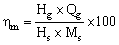
In which:
h m = gasification efficiency (%) (mechanical)
Hg = heating value of the gas (kJ/m³), (see table 2.1 g or 2.3)
Qg = volume flow of gas (m³/s)
Hs = lower heating value of gasifier fuel (kJ/kg) (see section 2.6)
Ms = gasifier solid fuel consumption (kg/s)
If the gas is used for direct burning, the gasification efficiency is sometimes defined as:
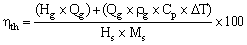
In which:
h th = gasification efficiency (%) (thermal)
r g = density of the gas (kg/m³)
Cp = specific heat of the gas (kJ/kg°K)
D T = temperature difference between the gas at the burner inlet and the fuel entering the gasifier (°K).
Depending on type and design of the gasifier as well as on the characteristics of the fuel Am may vary between 60 and 75 per cent. In the case of thermal applications, the value of h th can be as high as 93 percent
Figure 2.4 Woodgas composition as a function of wood moisture content (15%-heat loss)
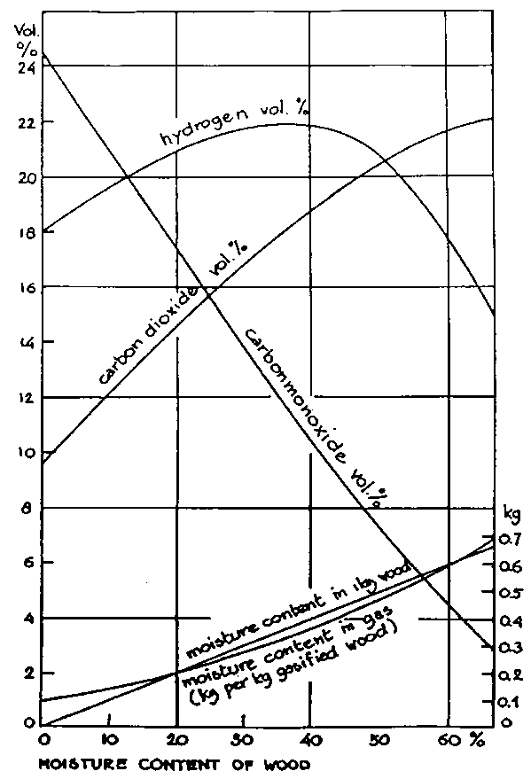
Figure 2.5 Calculated change of woodgas composition as a function of losses through convection and radiation
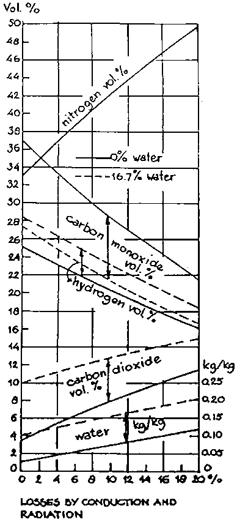
Figure 2.6 Calculated change of woodgas composition as a function of the gas outlet temperature (losses through sensible heat)
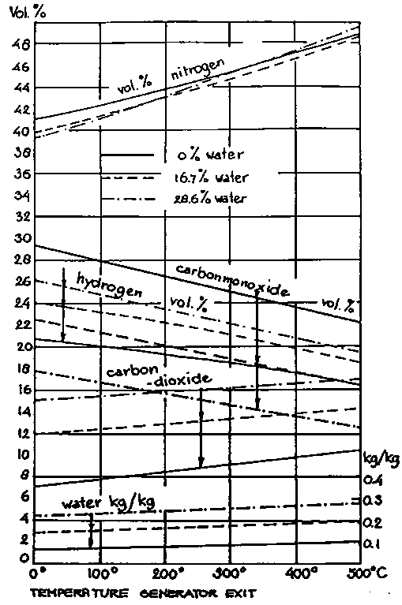